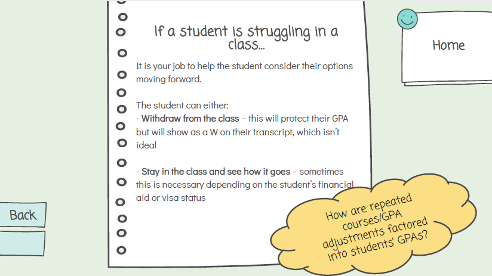
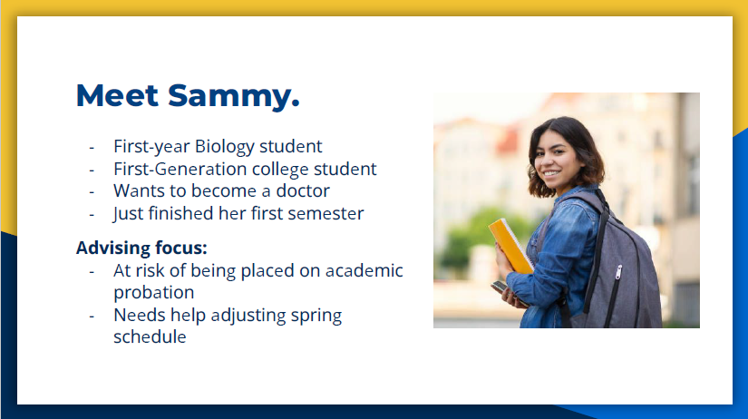
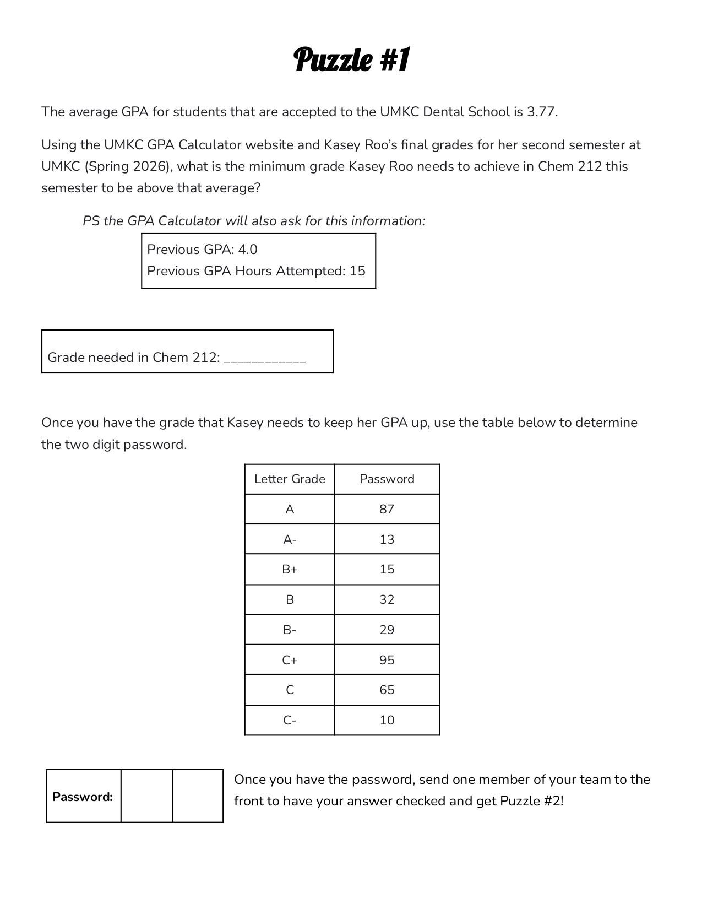

Previous Projects

Experience the ProjectPre-Med Advising Instructional Experience:
Description:
This project involved the development of an Ask System that supports academic advisors for non-science degree programs who work with pre-medicine students. An Ask System is a module that uses pre-defined questions to construct knowledge and bolster problem-solving strategies. Users can work through the entire module in one sitting as part of an onboarding process, or they can use the system as a just-in-time refresher as needs arise during their daily work.
The primary challenge addressed was the discrepancy between the expectations of these advisors to deliver effective and accurate support for pre-med students, and the knowledge and confidence the advisors exhibit when working with this select population. Using a needs analysis and a learner persona, I developed learning objectives focused on improving advisors’ ability to accommodate required pre-medicine courses within a student’s degree plan, utilizing appropriate reference materials, and streamlining referrals to pre-med advisors.
Through these analyses, I was able to construct a list of frequently asked questions that reflect the observed needs of the advising group, and create an interactive, informational Ask System that can be used to help achieve the desired outcomes.
Reflection:
This project strengthened my ability to use multiple types of analyses, such as task analysis, prerequisite analysis, and procedural analysis, to inform the design of instructional resources for working professionals. Additionally, this project served as my first major foray into creating interactive online learning materials, a skill which will be essential as I continue to develop instructional experiences.
Improving Documentation Practices for Academic Advisors:
Description:
In this project, I headed a group that designed a training program aimed at improving the quality, consistency, and usefulness of academic advising documentation. Advising meeting notes serve multiple stakeholders, including advisors, students, and institutional staff, yet are often written with varying levels of detail and quality standards, which hinders the functionality of the documentation. The instructional solution addressed this problem by: 1) providing information on the expected contents of a note, 2) defining what “high-quality” notes should look like, and 3) providing learners with both scaffolded learning activities as well as individualized and group practice activities. This training incorporated a variety of behaviorally-anchored examples, non-examples, and simulated practice exercises.
In addition to the analyses used to design and develop the training, this project also involved the creation of formative, summative, and confirmative assessment and evaluation strategies such as note quality rubrics and post-training surveys.
Reflection:
This project helped me translate abstract qualitative deficiencies and challenges into concrete, observable behaviors that form the basis for learning objectives. It also allowed me to become familiar with the entire ADDIE process rather than just focusing on one piece of the model, which has helped strengthen my competence as an instructional designer. Finally, I had the opportunity to further hone my project management and leadership skills, making me a valuable addition to a team.


Pre-Med and Pre-Dent 101 for Students:
Description:
This project was created to address instructional needs of a specific population of undergraduate students: first-year pre-medicine and pre-dentistry students. Not only did I help design and develop the learning materials, but I also served as the facilitator for the learning experience itself.
The workshop aimed to achieve several instructional goals, such as familiarizing students with important academic standards required to be competitive applicants and cultivating the initiative and research skills that are crucial to becoming successful candidates.
In addition to an informational component, the project explored the use of games as instructional activities. Participants were given a series of puzzles to complete that introduced the students to helpful tools and resources and resulted in the acquisition of critical knowledge, all while providing an age-appropriate cognitive challenge.
Reflection:
I greatly enjoyed the game-development component of this learning experience. Creating the puzzles was a fun venture on its own, but it also required an iterative formative evaluation system. While progressing through multiple drafts can sometimes feel tedious, I can recognize the importance of that process. Without it, several of the puzzles would have been too difficult and would have run too long, diminishing the efficacy of the other activities.
| Project Title | Type | Tools Used | Key Skills | Outcome |
|---|---|---|---|---|
| Non-Science Pre-Med Advising Ask System | Instructional Design | PowerPoint, PDF modules, needs analysis frameworks | Needs analysis, task analysis, instructional design, content structuring | Developed an interactive Ask System to support advisors in delivering accurate pre-med guidance |
| Improving Documentation Practices for Academic Advisors | Instructional Design (Group Project) | Slide deck modules, rubrics, surveys | ADDIE process, assessment design, project management, leadership | Designed a training program that improved consistency and quality of advising documentation |
| Pre-Med & Pre-Dent 101 Workshop | Instructional Design + Facilitation | Interactive puzzles, workshop materials | Learning activity design, facilitation, formative evaluation, gamification | Delivered a workshop that built student knowledge through interactive, game-based learning activities |